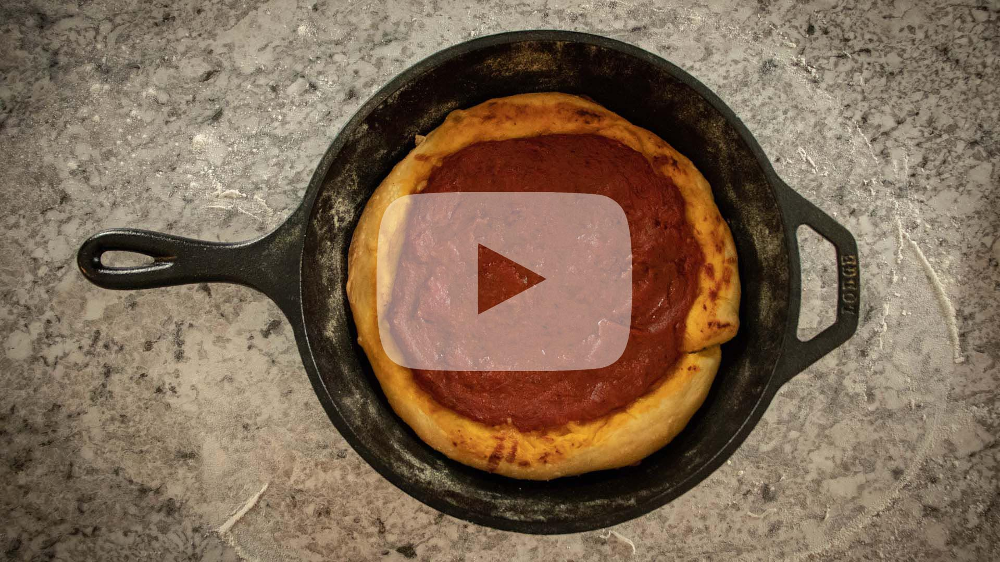

Chicago Deep Dish Pizza
Pizza Dough:
- - 3 1/2 to 4 cups of bread flour + extra for kneading
- - 1 packet of instant yeast (2.25 teaspoons)
- - 1 teaspoon sugar
- - 1 1/2 cups of water (110 - 120 degrees F)
- - 2 teaspoons olive oil + extra for resting
Pizza Toppings:
- - Shredded mozzarella (to preference)
- - Toppings of your choice
- - Pizza sauce (enough to cover cheese/toppings)
Directions:
Pizza Dough:
- 1. In a glass cup or bowl, add water, yeast, and sugar. Gently stir together. Allow to sit 10 - 15 minutes to ensure yeast is active.
- 2. In a separate bowl combine flour, sugar, salt.
- 3. Verify yeast is activated (foam formed at surface of water). Add water concoction to flour along with the 2 tablespoons of olive oil.
- 4. Mix all ingredients together using mixing spoon or mixer.
If using a mixer:
- Allow mixer to mix the dough for a few minutes. After a few minutes assess if dough is too sticky. If dough is still sticky, add small increments of flour until at consistency needed for dough. Once at desired consistency, allow mixer to knead the dough for 10 minutes.
If mixing with a spoon:
- Once ingredients are combined, pour out dough mixture onto a floured counter. Knead dough by hand for 10 - 15 minutes. If dough is too sticky, add flour in small increments until at desired consistency.
- 5. Form dough into a ball.
- 6. Add 1 - 2 tablespoons of olive oil to a bowl, add ball of dough to bowl. Roll the dough around in the oil to spread oil around the outside of dough ball.
- 7. Store dough ball in a warm place for 60 minutes.
- 8. After 60 minutes of resting, punch the dough down. Take the dough out of the container and cut into two portions. Roll each portion into a ball.
- 9. Place each ball in a bowl, with a small amount of olive oil. Put plastic wrap over bowl and put into fridge for a day or two to allow gluten to fully form.
Pizza:
- 1. Preheat oven to 425 degrees F.
- 2. Take dough out of refrigerator, remove from bowl, allow to rest on lightly floured countertop for 20 - 30 minutes.
- 3. After resting 20 - 30 minutes, form out dough into a pizza shape.
- 4. Prep cast iron skillet by wiping some olive oil onto the pan.
- 5. Add dough to cast iron, form into a shape of a deep dish crust.
- 6. Add cheese, toppings, and top off with sauce. Smooth out sauce to make even layer.
- 7. Put into oven for 20 - 25 minutes, check on pizza periodically to assess doneness.
- 8. Remove from oven, carefully remove pizza from cast iron and allow to rest on a baking sheet for 10 - 15 minutes.
- 9. Cut up pizza and eat.